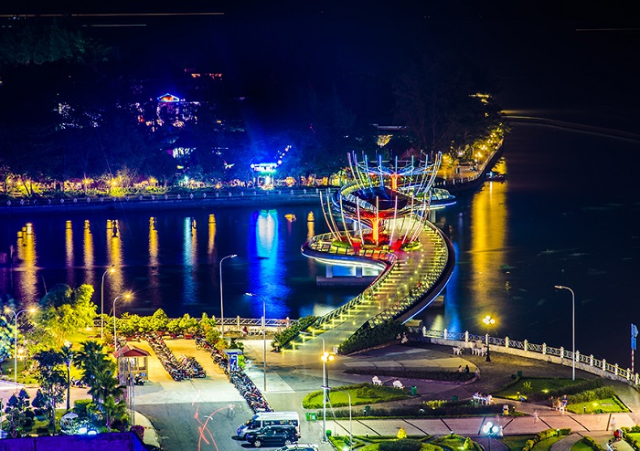
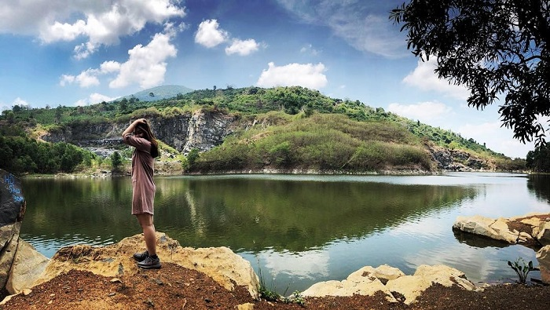
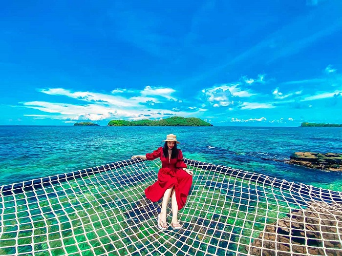
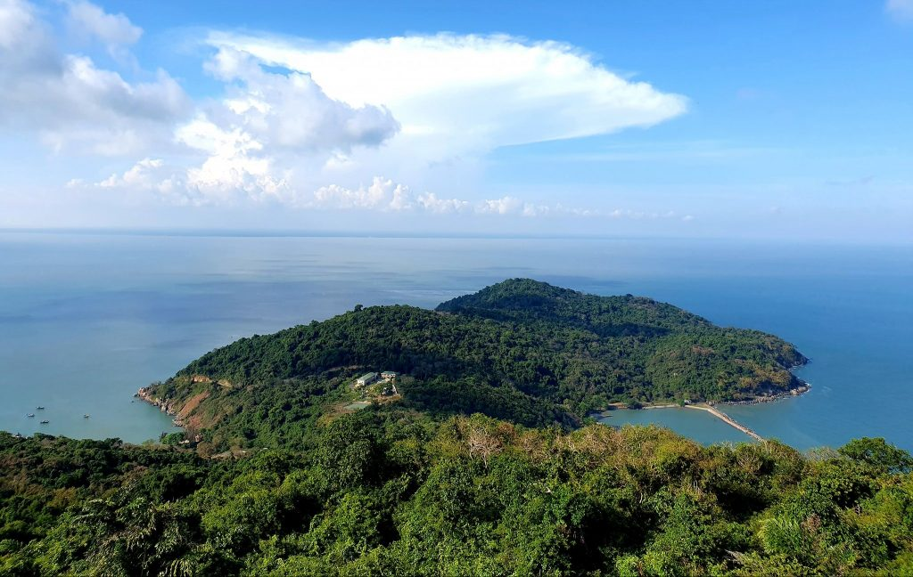

Địa điểm du lịch Vũng Tàu
Vũng Tàu có bờ biển trải dài, cảnh quan đẹp, cùng nhiều địa danh chứa đựng giá trị văn hóa, lịch sử to lớn, trở thành điểm đến yêu thích của khách du lịch tứ phương. Đến với thành phố biển này, bạn không chỉ được tắm mát, tham gia nhiều hoạt động thể thao trên biển thú vị, mà còn được chiêm ngưỡng cảnh quan đẹp của bãi Trước, bãi Sau, Côn Đảo,... tham quan Bạch Dinh, Bảo tàng vũ khí cổ,... Bên cạnh đó là thưởng thức nhiều món ngon hấp dẫn như bánh khọt, lẩu cá đuối,...

Vũng Tàu là thành phố du lịch nghỉ mát, tắm biển, dưỡng bệnh ở biển sớm nhất nước ta
Địa điểm du lịch Sài Gòn
Sài Gòn là thành phố năng động, sầm uất bậc nhất nước ta. Đến với địa điểm du lịch Sài Gòn, du khách không chỉ được ngắm cảnh phố xá nhộn nhịp, đông vui mà còn được check in nhiều điểm vui chơi, tham quan nổi bật của thành phố như phố đi bộ Nguyễn Huệ, bến Nhà Rồng, Dinh Độc Lập,... Ngoài ra, du khách còn có cơ hội ghé thăm các địa điểm du lịch gần Sài Gòn nổi tiếng như địa đạo Củ Chi, đảo Thạnh An, biển Long Hải,...
Dinh Độc Lập là một điểm check-in tuyệt đẹp tại Sài Gòn
Điểm du lịch Cần Thơ
Cần Thơ là một trong những điểm du lịch miền Tây Nam Bộ hấp dẫn hàng đầu. Các địa điểm du lịch Cần Thơ nổi tiếng phải kể đến như bến Ninh Kiều, chợ Đêm, đảo ngọt Cù Lao, nhà cổ Bình Thủy,... Cùng với đó là nhiều món ngon đậm đà hương vị miền sông nước như ốc nướng tiêu xanh, lẩu mắm, bún tôm khô Cái Răng,... Cảnh đẹp sông nước hữu tình, ẩm thực độc đáo cùng con người thân thiện, hiếu khách khiến Cần Thơ trở thành điểm đến hấp dẫn níu chân du khách.
Bến Ninh Kiều
Địa điểm du lịch Tây Ninh
Du lịch miền Nam nhất định không thể bỏ qua vùng đất Tây Ninh - nơi nổi tiếng với núi non hùng vĩ, cảnh đẹp say lòng người. Các địa điểm du lịch Tây Ninh nổi bật phải kể đến là núi Bà Đen, hồ Dầu Tiếng, tháp Chóp Mạt, vườn quốc gia Lò Gò – Xa Mát, chùa Thiền Lâm, cửa khẩu Mộc Bài,... Đến đây, ngoài chiêm ngưỡng cảnh đẹp, đừng quên thử những món đặc sản thơm ngon như bò tơ, thằn lằn núi Bà Đen, nem bưởi, ốc xu,...

Ma Thiên Lãnh Tây Ninh là điểm đến hấp dẫn trong hành trình khám phá đất Việt
Điểm du lịch Phú Quốc
Du lịch Phú Quốc nổi tiếng với những bãi biển đẹp, hoang sơ như Bãi Sao, Bãi Dài, Gành Dầu,... cùng nhiều điểm vui chơi hấp dẫn như VinWonders Phú Quốc, Vinpearl Safari, cùng các địa điểm du lịch Phú Quốc nổi tiếng như vườn tiêu, chợ đêm, Dinh Cậu, suối Tranh,... Đến đây, du khách còn được thưởng thức nhiều món ngon đậm đà hương vị biển như hải sâm, tiết canh cua, gỏi cá trích,....
Vẻ đẹp hoang sơ, yên bình của đảo ngọc Phú Quốc
Địa điểm lịch Cà Mau
Mảnh đất cực Nam Tổ Quốc – Cà Mau sông nước là điểm đến thu hút khách du lịch bởi những con người chân chất, thật thà cùng cảnh sắc thiên nhiên miền sông nước trữ tình. Hãy đến Cà Mau một lần để thêm yêu vùng đất đặc biệt này với những địa điểm du lịch cực kì độc đáo như chợ nổi Cà Mau, hòn Đá Bạc, rừng ngập mặn Cà Mau, mũi Cà Mau, khu Vườn chim, đảo Hòn Khoai Cà Mau,...
